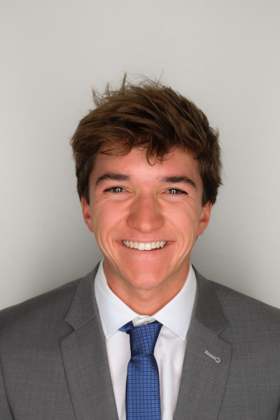
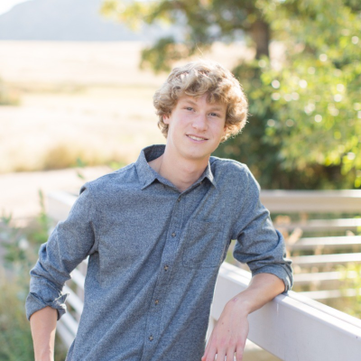

Leadership
Student Leaders

Noah Vavoso
President
My name is Noah Vavoso and I am leading TBP this year! I am currently a senior in aerospace engineering with a minor in astronomy. I am excited to grow TBP into a campus wide known organization with strong active membership and new initiates this semester. I am currently a TA/TF for ASEN 3300, Electronics and Communications while also spending a lot of time on senior design. I am hoping to make new connections at every event and can’t wait to get more people involved.
On my own time I am interested in weather forecasting, climatology, photography, and astronomy. I love to be active and outdoors, doing anything from playing water polo, swimming, hiking 14ers, skiing, climbing, camping, to generally just being up in the mountains. Sko Buffs!

Nora Su
Vice President
My name is Nora Su and this year I am the Vice President of Tau Beta Pi, returning after being the Corresponding Secretary last year! I’m a senior studying computer science, with interests in data and HCI. I’m a CA for the CSCI 1300, Intro to Computing, and I’m also an undergraduate researcher in the CAIRO Lab contributing to an autonomous 3D reconstruction project. This past summer, I interned at Apple as a data engineer on the Ads Data Products Engineering team.
Outside of academics, I love distance running and will be co-captaining the CU Run Club this year. I also love hiking, skating (both ice and inline), and traveling. This is my third year as a member of TBP, and I’m super excited to help our chapter grow even further!

Melissa Wong
Treasurer
I’m Melissa Wong, the Treasurer for Tau Beta Pi this year. As a sophomore with a dual major in Pre-Med Biomedical Engineering and Computational Linguistics, I’m interested in building bridges between traditionally separate disciplines. I seek to be an advocate for medical equity, mobilizing a better healthcare system through multidisciplinary research and people-driven solutions. This has led me down a variety of paths, from stealth startups to performing kidney transplants and teaching blind athletes how to ski.
Having lived in Shanghai, California, and Colorado, I am continually appreciative of cross-cultural connections and novel experiences. True to my Colorado roots though, I’m an adrenaline-junkie, skier, climber, and pickleball enthusiast. On the other half, I’m a concert-goer, fashion buff, and a lover of all things life!

Miles Zheng
Recording Secretary
My name is Miles Zheng and this year I am the Recording Secretary of Tau Beta Pi. I am a senior double majoring in Computer Science and Mathematics. I have an interest in machine learning as well as theoretical computer science. I have also worked at NIST over the summer in the Quantum Nanophotonics group.
Outside of school, I enjoy reading novels and taking walks. I also know Mandarin. This is my third year in Tau Beta Pi, and I’m excited for this semester.

Hyma Jujjuru
Corresponding Secretary
I’m Hyma Jujjuru, Tau Beta Pi Corresponding Secretary (previously Director of Professional Relations) and a Computer Science major. I am passionate about helping improve people's lives through the innovation of technology, specifically through machine learning. In addition to Tau Beta Pi, I am a board member of Engineering Excellence Fund (EEF) and Logistics Director of HackCU. My research involves the study of privacy control when interacting with physical (robots) or virtual agents. I also interned at Google for 3 weeks this summer.
Outside of academics, I am a Resident Advisor at Williams Village North and love to make people feel welcomed into the community. I love to travel to new places and try new cuisines. I am always open to new experiences and adventures.
This is my second year with Tau Beta Pi and I am very elated to meet you all!!

Ryan Chen
Events Coordinator
I’m Ryan Chen, Tau Beta Pi Events Coordinator and an aerospace engineer passionate about people and driven by discovery. As Director of the CU in Space Rocketry Team, I lead our group in developing hybrid rockets and encourage younger students to get involved in engineering, supporting both technical and personal growth within our community.
My research blends coding, statistics, and human factors to help advance human-centered space exploration. When I’m not working on engineering projects, you’ll find me hiking, climbing, snowboarding, playing racket sports, or making music—including marching Drum Corps International on euphonium with the Battalion and Blue Knights in recent summers!

Jorie Myers
Advertising & Publicity
My name is Jorie Myers and I am Director of Advertising and Publicity this semester. I am from St. Louis, MO and am currently a senior in Aerospace Engineering with a minor in Engineering Management! I am excited to continue building TBP into a strong and engaging organization with active members and new initiates this semester. I currently do research through Bioserve Space Technologies on east campus, where I work with PhD students on their projects involving bioastronautics. I’m looking forward to connecting with more members and getting people involved in everything TBP has to offer.
In my free time, I love being active and outdoors—whether it’s hiking, climbing, skiing, or camping in the mountains. I also love being involved in a bunch of different clubs and organizations at CU, as well as volunteering in my community. Sko Buffs!

Logan Marshall
Membership Director
My name is Logan Marshall and I am the Membership Director for this semester. I’m from Boulder, Colorado. I’m a senior at the college College of Engineering, majoring in Mechanical Engineering with a minor in computer science. In addition to school, I work as a Junior Design Engineer utilizing CAD software and rapid prototyping at CodeCom, a fiber optics company. I have an interest in exploring robotics and aerospace engineering in the future. This past summer I interned at Pure Fishing as an AI intern developing an automated storyboarding application.
Outside of academics, I love travelling, health and fitness as well as the outdoors. I also enjoy expressing my creative side through sewing and doodling. I look forward to getting more involved in Tau Beta Pi this year!

Megan McIntosh
Educational Outreach (K-12 STEM Outreach)
My name is Megan McIntosh, and I’m excited to serve as one of the Educational Outreach Chairs for Tau Beta Pi this year. I am currently a sophomore majoring in Integrated Design Engineering with an emphasis in Mechanical Engineering. I am passionate about making STEM fields more accessible and engaging for younger students, and I look forward to helping inspire the next generation of engineers through K–12 outreach and community involvement.
Outside of academics, I play club soccer and love staying active. I enjoy hiking, skiing, traveling, and going to concerts, as well as spending time reading and exploring new music. I’m excited to connect with more people through TBP and to contribute to the chapter’s impact this year.

Jonathan de Grandpre
Professional Relations
Hi! I’m Jonathan, the Professional Relations Director for Tau Beta Pi. This year, I’m thrilled to foster meaningful connections between students and industry professionals, helping bridge the gap between academia and the professional world. I’m currently a Senior majoring in Mechanical Engineering and I also have the honor of serving as President of our chapter of the American Society of Mechanical Engineers (ASME).
Beyond academics, I’m passionate about advancing innovation in the medical device industry. My hands-on experiences at companies like Abbott Laboratories, where I led performance testing on coronary stents, have solidified my dedication to engineering solutions that save lives and transform healthcare.

James Lambert
Professional Relations
Hi! I’m James, and I serve as a Director of Professional Relations for Tau Beta Pi at CU Boulder. In this role, I’m passionate about building opportunities for students to connect with professionals, explore career paths, and gain insight into industries they may want to pursue. I’m a senior studying Aerospace Engineering with a minor in Computer Engineering, and I currently work as a Fire Suppression Engineering Intern at Cosco Fire Protection in Denver, CO.
Outside of academics and work, I enjoy spending time in the Colorado outdoors through hiking, backpacking, and flyfishing. I also love playing sports, playing strategy games, and listening to country music.

Carson Mead
Volunteering Events Director
My name is Carson Mead and I am Tau Beta Pi’s Volunteering Director. This upcoming year I am excited to help build our relationship with local charities and inspire our fellow Tau Bates to serve the Boulder community. I am a current junior studying Aerospace Engineering and researching composite material in extreme environments in the Mechanics of Complex Materials lab on east campus. I also am a tutor for ASAP Tutoring helping students with classes from introductory computer science to differential equations.
Outside of academics, I am Propulsion Lead for our competition rocketry team, CU in Space, as well as being Co-president of CU SCUBA club. I also love the outdoors doing anything from running, mountain biking, skiing, and mountain climbing. I am so excited for this upcoming year! Sko Buffs!
Keegan McCarthy
Social Events Director
Hi! I’m Keegan, the Social Events Director for TBP. This year, I'm excited to be part of the team and have the opportunity to plan some events for our fellow TBP members. These events will be focused on fostering a community within the CU Boulder TBP chapter and giving members the chance to meet and hang out with some of their fellow peers while participating in some great events. I’m currently a senior in Mechanical Engineering and am also a part of the CU Boulder Formula SAE Team on the aerodynamics subteam. Outside of class, you can find me skiing, fishing, and camping on most weekends.
Carter Harris
Fundraising
Hello! My name is Carter (he/him), and I am one of the Fundraising Directors this year for Tau Beta Pi’s Boulder Chapter. I’m looking forward to helping boost attendance at our social events so we can make more connections between our students, as well as our members coming to our professional events. Outside of TBP, I am a senior studying Mechanical Engineering and Mathematics with a minor in Engineering Management, and I have memberships in a few other student organizations here at Boulder, such as the Engineering Council. Please don’t hesitate to reach out to me with questions about anything (TBP related, or otherwise)!
Daniel Gruenbauer
Fundraising
Hello, my name is Daniel! I am one of the Fundraising Directors for Tau Beta Pi this year (25-26). I served as the Fundraising Director for the latter half of the 24-25 school year and am looking forward to improving our fundraising model this year. With a larger budget we will be able to bring TBP to more people and have a more substantial impact on our community. I am studying Aerospace Engineering with a minor in Engineering Management here at CU Boulder. In my free time I enjoy spending time outdoors and reading a good book!
Advisors

Sandy Pitzak
Chief Advisor
I am an aerospace engineer who has done design, analysis, and operations of civil & commercial, manned & unmanned spacecraft for various companies before starting my own independent subcontracting business. My experience includes space situational awareness, orbital mechanics, systems engineering, electrical power systems, and environmental control & life support systems. Currently, I am a Senior Spacecraft Engineer at Atomos Space in Denver, designing space tugboats.
As an undergraduate, I served first as corresponding secretary, then as president of the Colorado Beta chapter. Upon graduation with my BS/MS in aerospace engineering in May 2001, I was elected to the advisory board, and became chief advisor in 2003. Since then, I have helped Colorado Beta host Tau Beta Pi National Conventions in 2006 and 2018. In 2016, I received the national Outstanding Advisor Award from Tau Beta Pi. I am also a director of the Front Range Alumni Chapter, acting as liaison between the alumni and student chapters.
In my spare time, I enjoy reading and watching programs about science, science-fiction, and fantasy. I can often be found riding my bike around Boulder or hiking along the trails. Other hobbies include knitting, sewing, and personal finance. Feel free to contact me with questions about Tau Beta Pi, anything space-related, life after college, etc.

Dr. Torin Clark
Faculty Advisor
I am the faculty advisor for Tau Beta Pi and a former student in Aerospace Engineering and member of TBP. I am an Associate Professor in the Smead Aerospace Engineering Sciences Department and faculty member in the Biomedical Engineering Program and Robotics Program. I am a member of the Bioastronautics Laboratory, where we research the challenges that humans face during space exploration missions. Specifically I focus on astronaut biomedical issues, space human factors, human sensorimotor/vestibular function and adaptation, interaction of human-autonomous and human-robotic systems, mathematical models of spatial orientation perception, and human-in-the-loop experiments.
Outside of TBP, I like to ski, hike mountains, camp, play soccer, and do those things with our two little kids.

Greg Newcomb
District Director & Chapter Advisor
I've worked at CU's Laboratory for Atmospheric and Space Physics (LASP) for nearly a decade as an Embedded Systems Engineer, which means I gets to combine three of my favorite hobbies: software, electronics, and space. My MS is in Electrical Engineering from CU Boulder.
I've acted as an advisor to the CU Boulder chapter since 2007 and before that served as the chapter President. I was appointed a TBP District Director in 2011, a post intended to facilitate communication between collegiate chapters and TBP HQ. My favorite parts of being involved with TBP are the frequent chapter visits, establishing relationships with chapter officers, and seeing officers grow into strong leaders.

Scott Busch
Chapter Advisor
I am an alumni of the Computer Science department of CU Boulder. I graduated from the BS/MS program at the end of 2009. Since graduating, I've has been working for Broadcom Limited (used to be Brocade Communications System) in Broomfield, Colorado. For Broadcom, I am a embedded software and linux kernel module developer working on the firmware running the network switches and routers.
Outside of a work, I dedicate a lot of time to my athletic pursuits as a endurance cyclist participating in many rides in the front range and Colorado mountains. In addition to cycling, I am starting to participate in triathlon racing. In the time remaining, I like reading, learning to play the piano, and getting together with friends.
I been an advisor for the Colorado Beta chapter since 2010. I am a past president of the CO-B chapter and currently is a member of the Front Range TBP Alumni chapter. I greatly enjoyed working with the students to support them for leading the chapter's membership. I enjoy watching the students grow and learn new skills and grow in their experiences.

CJ O'Neil
Student Advisor
I’m a senior in the Aerospace Engineering Bachelors and Accelerated Masters program. I served as the Vice President of the chapter during the ‘24-’25 school year with former president Grace Halbleib. I’ve been a Spacecraft Systems Engineer at the Laboratory for Atmospheric and Space Physics since the end of my freshman year and have been an undergraduate research assistant researching ecological radar applications for the past year.
In my free time, I enjoy climbing, snowboarding, 14ers, and getting outside.